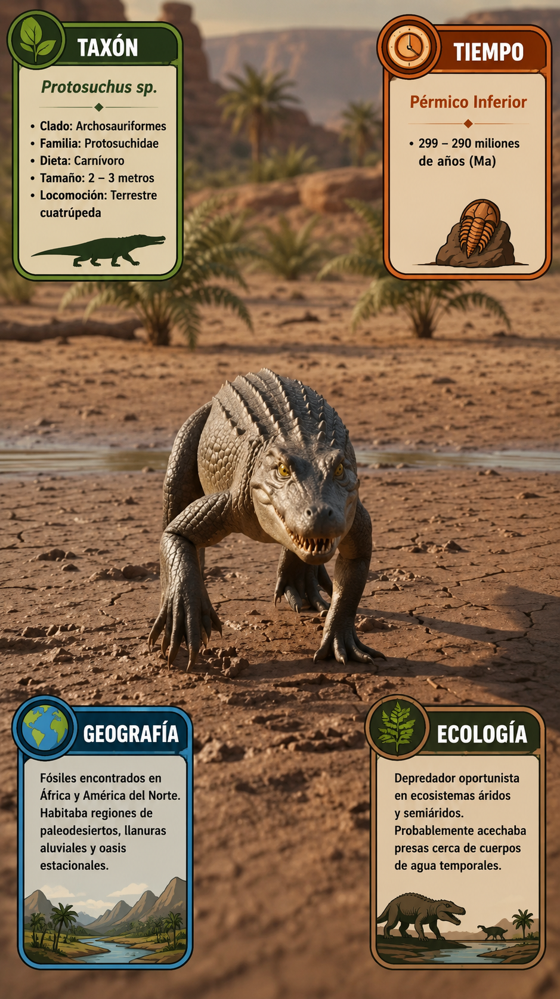

Paleoficha de PalEntropía

TAXÓN:
Protosuchus sp.
CLADO:
Crocodyliformes (Protosuchidae)
DIETA:
Carnívoro / Insectívoro-Vertebrívoro (depredador generalista de pequeños vertebrados e invertebrados)
TAMAÑO:
Entre 0,8 y 1,2 metros de longitud y una masa aproximada de 4 a 12 kg.
LOCOMOCIÓN:
Terrestre cursorial y semierecta; extremidades relativamente largas situadas bajo el cuerpo, adaptadas para una locomoción rápida sobre tierra firme.
TIEMPO:
Jurásico Inferior (Hettangiense–Sinemuriense, aprox. 201–190 Ma)
GEOGRAFÍA:
Norteamérica (principalmente Arizona y otras regiones del oeste de Estados Unidos).
EQUIVALENCIA PALEOGEOGRÁFICA:
Llanuras aluviales de baja energía, sistemas fluviales interiores y cuencas sedimentarias semiáridas.
AMBIENTE PALEAOECOLÓGICO:
Ecosistemas terrestres continentales con mosaicos de vegetación ribereña y zonas abiertas sometidas a una marcada estacionalidad hídrica.
ECOLOGÍA:
• Flora: Coníferas primitivas, ginkgos, bennettitales y helechos en las zonas más húmedas.
• Fauna secundaria: Dinosaurios basales, pequeños terópodos, mamaliaformes tempranos, lepidosaurios y otros arcosaurios.
• Nichos: Depredador terrestre de pequeño tamaño. Su hocico corto y profundo proporcionaba una mordida potente para capturar pequeños vertebrados e invertebrados. Las extremidades relativamente largas le permitían desplazarse con rapidez por tierra, mientras que los osteodermos reforzaban el cuerpo sin reducir excesivamente la movilidad.
• Relaciones: Crocodyliforme basal. Protosuchus representa una de las primeras radiaciones de los cocodriliformes y muestra muchas de las características anatómicas que posteriormente definirían al grupo, conservando un estilo de vida principalmente terrestre.
CLIMA:
Jurásico cálido. Clima cálido con marcada estacionalidad regional, alternando llanuras semiáridas y corredores fluviales con abundante vegetación.
ESTADO ECOLÓGICO:
Extinto. Uno de los primeros cocodriliformes plenamente terrestres, ocupando el nicho de pequeño depredador generalista durante el Jurásico Inferior y constituyendo un paso clave en la evolución temprana del linaje que daría origen a los cocodrilos modernos.